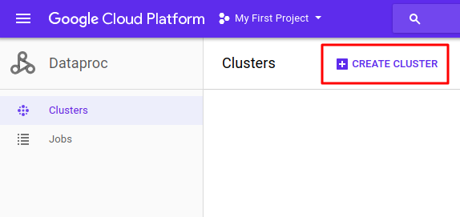
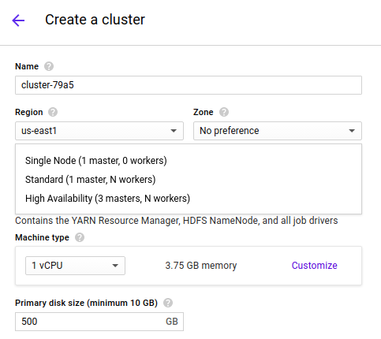
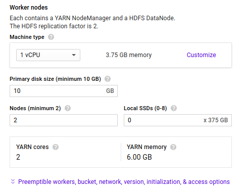
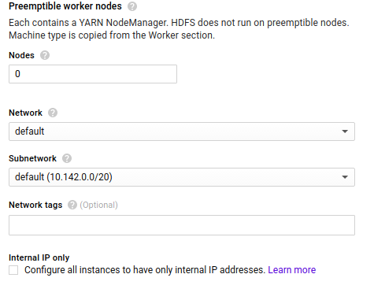
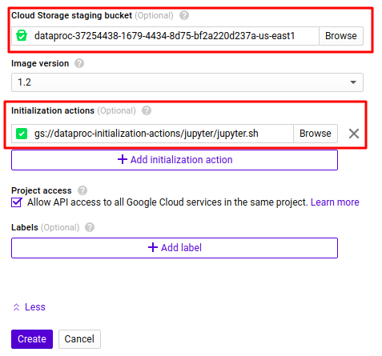

- Mon 01 January 2018
- DevOps
- M Hendra Herviawan
- #GCP, #Apache Spark, #Dataproc

1.Dataproc Console - Create Cluster
Cloud Dataproc is a fast, easy-to-use, fully-managed cloud service for running Apache Spark and Apache Hadoop clusters in a simpler, more cost-efficient way.

2.Master Node
An external service for acquiring resources on the cluster (e.g. standalone manager, Mesos, YARN).

3. Worker Node
Any node that can run application code in the cluster.

4.Preemtible Worker Node
Preemtible is Affordable, short-lived compute instances suitable for batch jobs and fault-tolerant workloads.

5. Cloud Storage Staging Bucket
To make your cluster persistance you need to specific where the file will be save.

6. Initialization Action
Specify initialization actions in executables or scripts that Cloud Dataproc will run on all nodes in your Cloud Dataproc cluster immediately after the cluster is set up. You can find frequently used and other sample initialization action scripts at the following locations:
- GitHub repository
- Cloud Storage - in shared bucket
>> gsutil ls gs://dataproc-initialization-actions
gs://dataproc-initialization-actions/CONTRIBUTING.md
gs://dataproc-initialization-actions/LICENSE
gs://dataproc-initialization-actions/README.md
gs://dataproc-initialization-actions/favicon.ico
gs://dataproc-initialization-actions/apache-zeppelin/
gs://dataproc-initialization-actions/bigdl/
gs://dataproc-initialization-actions/cloud-sql-proxy/
gs://dataproc-initialization-actions/conda/
gs://dataproc-initialization-actions/datalab/
gs://dataproc-initialization-actions/drill/
gs://dataproc-initialization-actions/flink/
gs://dataproc-initialization-actions/ganglia/
gs://dataproc-initialization-actions/hive-hcatalog/
gs://dataproc-initialization-actions/hue/
gs://dataproc-initialization-actions/ipython-notebook/
gs://dataproc-initialization-actions/jupyter/
gs://dataproc-initialization-actions/kafka/
gs://dataproc-initialization-actions/list-consistency-cache/
gs://dataproc-initialization-actions/oozie/
gs://dataproc-initialization-actions/post-init/
gs://dataproc-initialization-actions/presto/
gs://dataproc-initialization-actions/stackdriver/
gs://dataproc-initialization-actions/tez/
gs://dataproc-initialization-actions/user-environment/
gs://dataproc-initialization-actions/util/
gs://dataproc-initialization-actions/zeppelin/
gs://dataproc-initialization-actions/zookeeper/